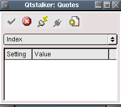
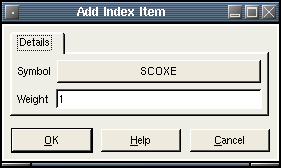

Create and update custom index charts. An index chart is a composite of other charts. Basically an index is calculated by multiplying each symbol by a weighting factor and then an average of all the weights is used to create the index value. To create a new index, press the "New" button, otherwise an update will update all the index charts to their most current values.

Pressing the "New" button will bring up the following dialog.

Currently you are allowed a maximum of 10 symbols. Basically there are 2 parameters for each item that makes up an index chart. The "Symbol" is the chart symbol and the "Weight" is a percentage of the symbol to use in the calculation of the index. A weight of 1.0 means 100%, a weight of 0.5 means 50%, a weight of 2.0 means 200% etc. To change a setting just click on the value area.